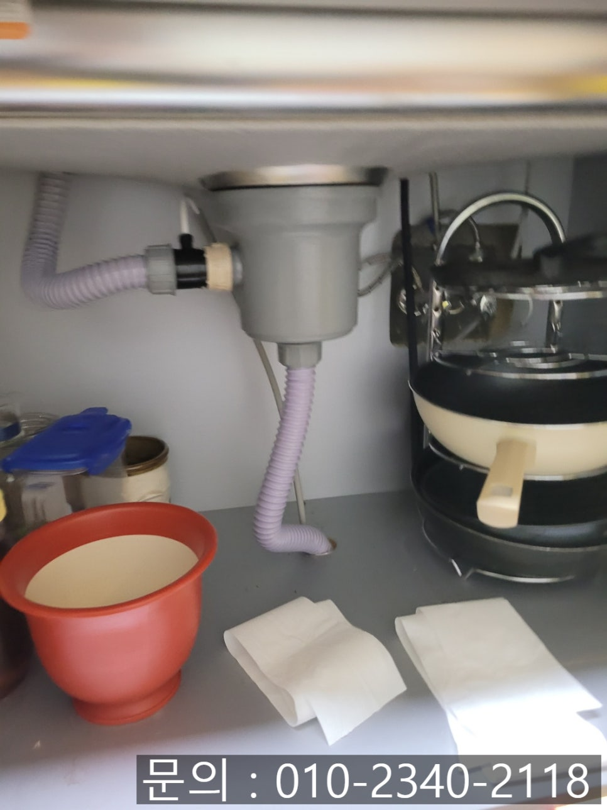
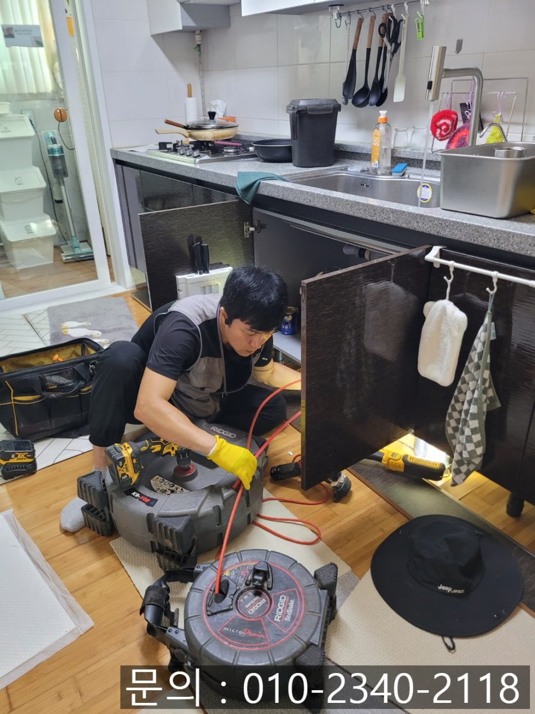
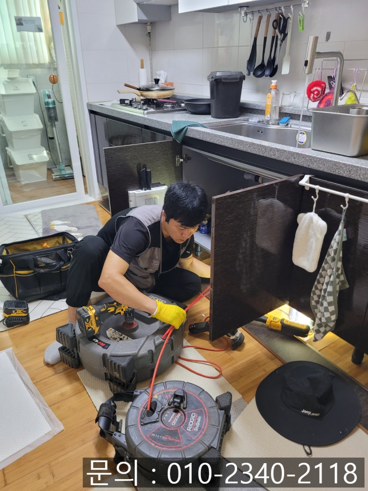
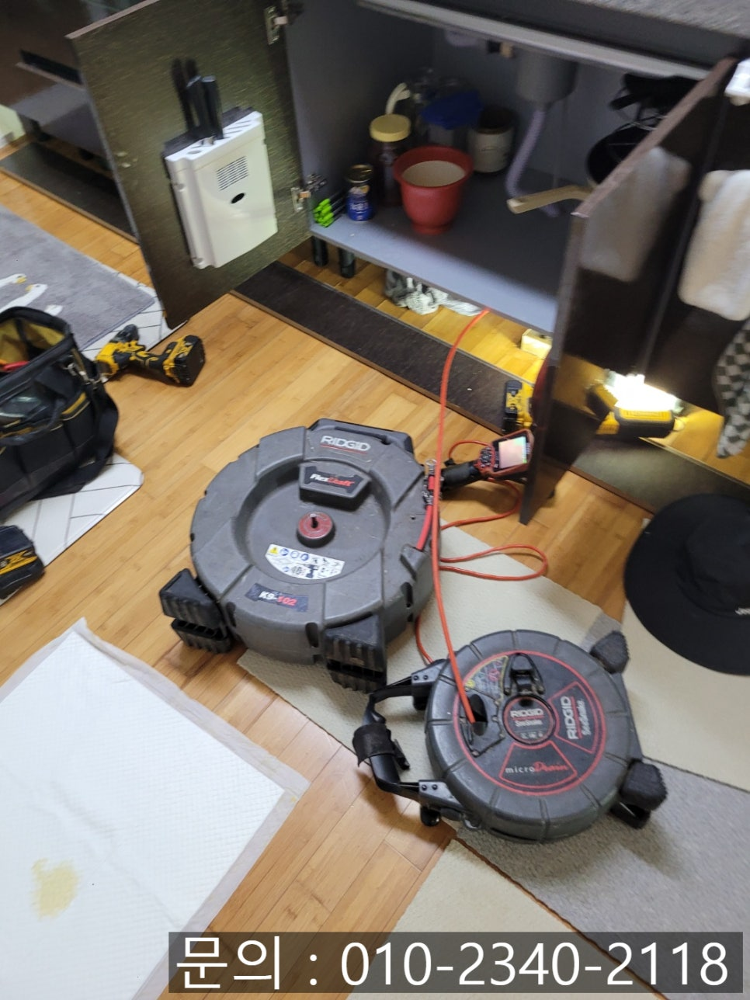
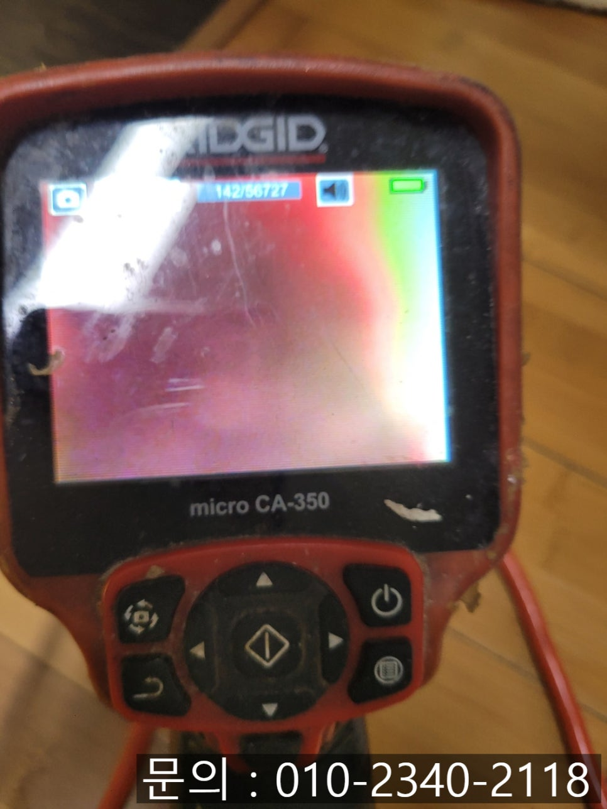
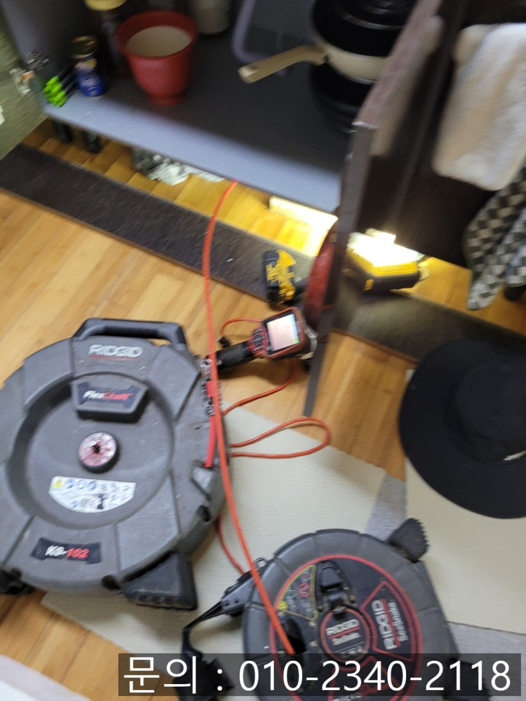

🏠 고매동 싱크대 막힘 용인 보라동 하수구 역류 뚫음 전문 업체
용인 보라동 싱크대막힘 전문 시공 후기

📋 작업 개요
- 위치: 용인 보라동, 보라동, 용인
- 서비스 유형: 싱크대막힘, 하수구막힘, 배관막힘, 역류해결, 뚫는업체, 고압세척
- 작업 일시: 2025. 8. 20. 13:30
- 업체명: 하수구수사대 (010-5615-2118)
🔍 문제 상황
안녕하세요.
용인 보라동 하수구 역류 뚫음 전문 업체 에스원 설비입니다.
한차례 굵은 비가 내리면서 이제 더위가 조금은 누그러질까 기대했는데, 다시 시작된 무더위와 열대야로 많은 분들이 고생하고 계시죠. 이런 날씨에는 몸도 지치지만, 주방이나 화장실 같은 위생 관리에도 더 신경을 써야 합니다. 특히 싱크대가 막히는 문제는 여름철에 더욱 심각하게 다가올 수 있는데요.

🔎 원인 분석
💡 전문가 진단: 정밀 진단 장비를 사용하여 슬러지의 고착 여부를 판명하고 타격/세척 작업을 실시했습니다.
여름철 싱크대 막힘은 생각만 해도 끔찍하죠. 음식물 쓰레기를 조금만 모아놔도 초파리가 꼬이고, 배수가 제대로 되지 않아 물이 고이게 되면 그곳은 초파리들의 놀이터가 되어버리게 됩니다. 냄새도 금방 심해져서 가족 모두가 스트레스를 받게 되죠.
실제로 연락을 주신 고객님도 "싱크대에서 물이 내려가지 않고 고여 있는데 그 냄새까지 너무 심해요"라는 이유로 도움을 요청해 주셨어요. 수도권 1시간 이내로 현장으로 방문 드릴 수 있는 에스원 설비! 신속하게 장비를 챙겨 출동하였어요.
고매동 싱크대 막힘 현장은 싱크대에 물이 그대로 고여 있는 상태였어요. 음식물 냄새가 진동을 하다 보니 고객님 표정에서도 지친 기색이 역력했어요.
싱크대가 막혔을 땐 무작정 뚫는 작업보다 정확한 원인을 파악하는 과정이 가장 중요합니다. 무작정 뚫는 작업만 진행하면 당장은 해결된 듯해 보여도 얼마 지나지 않아 똑같은 문제가 반복될 수 있습니다.

🔧 작업 과정
그럴 때 필요한 장비는 바로 배관 내시경 장비입니다. 내시경 장비는 배관 속에 케이블 선을 진입시켜 카메라 화면을 통해 내부를 실시간으로 확인할 수 있는데요. 눈으로 직접 상태를 확인할 수 있기 때문에 막힘의 정확한 원인을 파악하는 데 꼭 필요합니다.
배관 내부는 기름때와 음식물 찌꺼기가 잔뜩 끼어 있었어요. 식기를 세척하거나 음식을 조리하면서 이런 찌꺼기들이 내부로 흘러 들어가게 된 것인데요, 이런 찌꺼기들은 시간이 지나면서 서로 엉겨 붙어 단단한 덩어리가 되고, 그 위로는 새로운 찌꺼기들이 계속 쌓이면서 결국 막혀버리게 됩니다.
원인을 파악했으니 본격적인 작업에 들어갔어요. 플렉스 샤프트라는 장비를 사용하여 배관 내벽에 들러붙어 있는 기름때와 찌꺼기들을 갈아내주었어요. 강한 회전력으로 작동하면서 배관 내부를 긁어내기 때문에 깨끗하게 제거할 수 있는 장점이 있어요.
갈아내준 이물질들은 석션기라는 장비를 사용하게 모두 흡입해내줌으로써, 배관에 찌꺼기들이 남지 않도록 하였어요.
작업을 마친 뒤에 다시 내시경으로 점검해 보니 내부가 뻥 뚫려 아주 깨끗한 상태를 확인할 수 있었어요. 고객님께서도 막힘없이 술술 쏴~ 내려가는 걸 보시고 안도하셨어요.


✅ 작업 완료
여름철에는 냄새와 위생 문제가 곧바로 생활 불편으로 이어지기 때문에 빠르고 확실한 해결이 중요합니다. 무더운 여름 시원하게 뚫린 배수구처럼 답답한 일 없이 지내시길 바라며, 싱크대나 화장실, 배관 문제로 불편을 겪고 계신다면 언제든지 보라동 하수구 역류 뚫음 전문 업체 에스원 설비를 찾아주세요. 경험과 노하우로 일상을 편안하게 만들어드리겠습니다.
경기도 용인시 기흥구 동백중앙로 191 8층 c8736호




⚠️ 주방 싱크대 배관 막힘 예방 수칙
- ✅ 기름기가 묻은 식기나 프라이팬은 설거지 전 키친타올로 반드시 기름때를 닦아내세요.
- ✅ 주기적으로 싱크대 개수대에 뜨거운 물을 가득 받아 한 번에 내려 배관 내부 기름을 씻어내세요.
- ✅ 배수구 거름망을 미세한 필터로 사용하시고 음식물 찌꺼기가 틈으로 새어 들지 않게 관리하세요.
- ✅ 베이킹소다와 식초를 뜨거운 물과 함께 일주일에 한 번씩 부어주면 배관 살균과 막힘 예방에 좋습니다.
💡 핵심 정리
- 확실한 장비 작업(내시경 점검 및 샤프트 스케일링)으로 원인을 뿌리 뽑습니다.
- 작업 후 1년 이내에 동일한 부위 재발 시 100% 무상 A/S 서비스를 보장합니다.
- 서울 · 경기 · 인천 전 지역에 24시간 언제든 긴급 출동할 수 있도록 항시 대기 중입니다.
❓ 자주 묻는 질문 (FAQ)
🚨 용인 보라동 싱크대막힘 문제로 고민이신가요?
정확한 원인 진단과 확실한 시공으로 재발 없는 해결을 약속드립니다.
24시간 긴급 출동 | 서울 · 경기 · 인천 전지역 | 1년 내 재발 시 무상 A/S